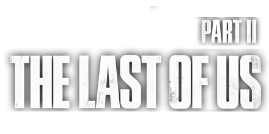

Uma história complexa e emocionante Vivencie os conflitos morais cada vez maiores criados pela busca implacável de Ellie por vingança. O ciclo de violência deixado em seu caminho desafiará suas noções de certo ou errado, bem ou mal e herói ou vilão.
ASSISTA AO TRAILER
HISTÓRIA
"The Last of Us" é um jogo eletrônico de ação e aventura lançado em 2013, desenvolvido pela Naughty Dog. A história se passa em um mundo pós-apocalíptico, devastado por uma pandemia que transformou a maioria da população em criaturas violentas e infectadas por um fungo chamado cordyceps. O jogador assume o papel de Joel, um sobrevivente que se tornou contrabandista para sobreviver, e deve escoltar Ellie, uma jovem imune à infecção que pode ser a chave para a cura da humanidade.
A narrativa emocionante e envolvente de "The Last of Us" é um dos pontos altos do jogo, que explora temas como amor, perda, sobrevivência e moralidade em um mundo cruel e desesperado. Além disso, a jogabilidade mista de ação, stealth e quebra-cabeças proporciona uma experiência desafiadora e emocionante para os jogadores, que devem enfrentar inimigos humanos hostis e criaturas infectadas usando habilidades de combate, estratégia e sobrevivência. "The Last of Us" é um jogo eletrônico aclamado pela crítica e público, considerado um dos melhores jogos já criados.
GAMEPLAY
"A gameplay de "The Last of Us" é elogiada por sua fluidez, controles responsivos e a atenção aos detalhes na construção do mundo do jogo. Desde a furtividade cautelosa até os combates viscerais, cada momento da jogabilidade busca transmitir uma sensação de tensão, desespero e esperança em um mundo devastado.
Em resumo, a gameplay de "The Last of Us" oferece uma experiência imersiva, desafiadora e emocionalmente impactante, combinando ação, sobrevivência e narrativa de forma magistral. É uma jornada inesquecível através de um mundo implacável e repleto de perigos.